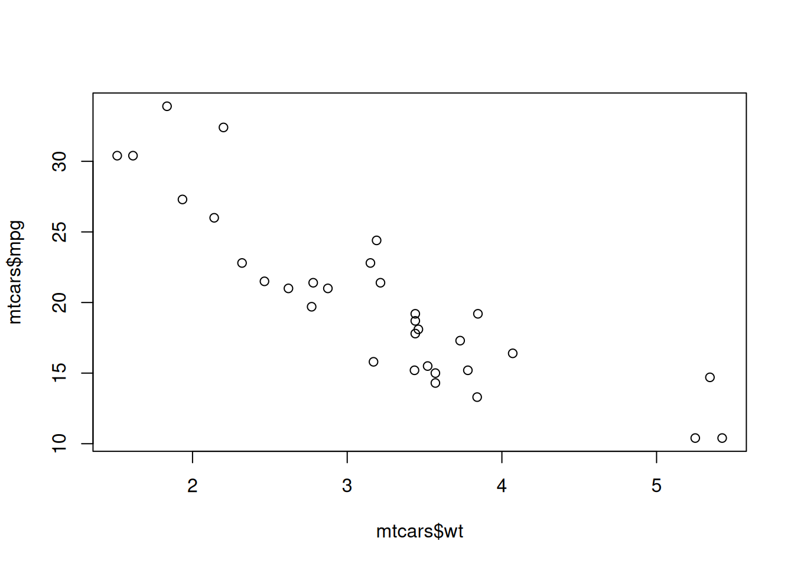
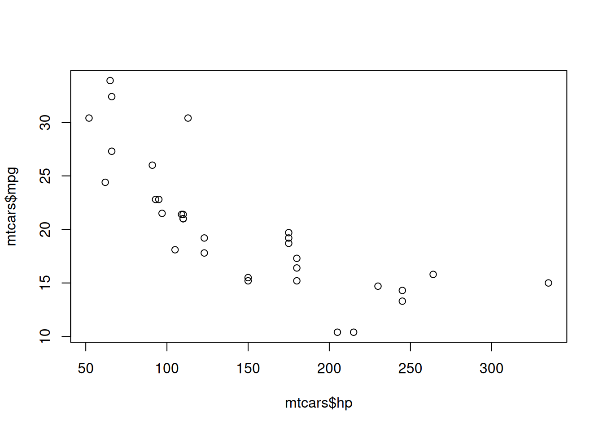

2026-09-23


This box is dropped on the slide, which lets a figure inside it stretch to fit.
An exercise solution
A collapsed callout is the exception: it keeps its box. Since clicking on slides can be awkward, the collapsed content is held back as a fragment and revealed when you advance. On the website it stays a click-to-open box.